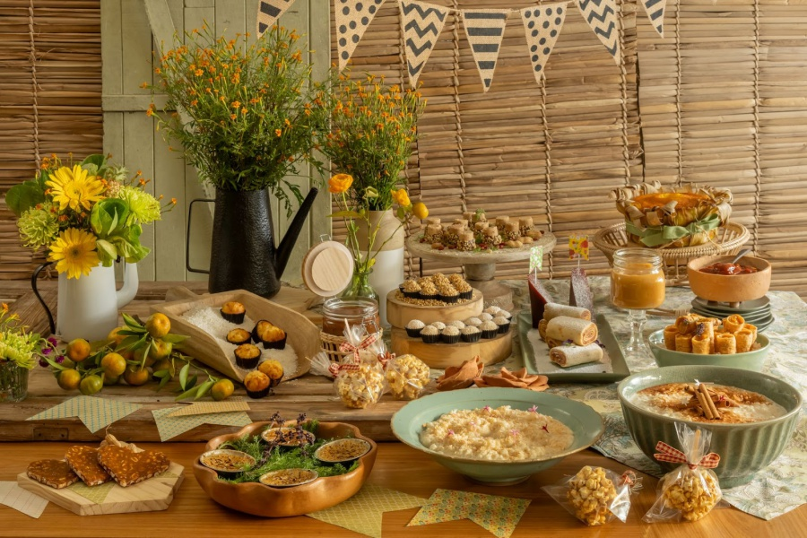

Galeria


A Festa Junina é uma celebração tradicional brasileira, realizada em homenagem a santos católicos como São João, Santo Antônio e São Pedro. Ela ocorre no mês de junho e é marcada por danças típicas, comidas tradicionais e vestimentas caipiras.
A Festa Junina nasceu no campo, celebrando as colheitas e os santos populares. Com o tempo, a cidade adotou essas tradições, mantendo viva a cultura rural. Hoje, a festa une pessoas de todos os lugares, movimenta a economia com produtos típicos do campo e valoriza costumes que fortalecem a identidade brasileira.